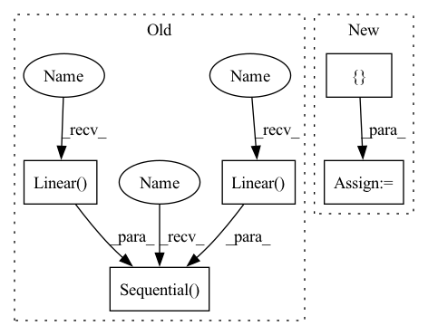

Pattern ID :37648
Before Change
nn.Linear(net_arch[1], 1),
)
self.q2_net = nn.Sequential(
nn .Linear( state_dim + action_dim, net_arch[0]) ,
activation_fn(),
nn.Linear( net_arch[0], net_arch[1]) ,
activation_fn(),
nn.Linear(net_arch[1], 1),
)
def forward(self, obs, action):
qvalue_input = th.cat([obs, action], dim=1)
return self.q1_net(qvalue_input), self.q2_net(qvalue_input)After Change
q2_net = create_mlp(state_dim + action_dim, 1, net_arch, activation_fn)
self.q2_net = nn.Sequential(*q2_net)
self.q_networks = [ self.q1_net, self.q2_netIn pattern: SUPERPATTERN
Frequency: 4
Non-data size: 5
Instances Fragment ID: 108173651
Project Name: dlr-rm/stable-baselines3
Commit Name: 5e3a84d5511ea121e01b2fa377e1c1e3219f34b3
Time: 2019-09-12
Author: antonin.raffin@dlr.de
File Name: torchy_baselines/td3/policies.py
M Class Name: Critic
N Class Name: Critic
M Method Name: __init__(5)
N Method Name: __init__(5)
M Parent Class: BaseNetwork
N Parent Class: BaseNetwork
M File Name: torchy_baselines/td3/policies.py
N File Name: torchy_baselines/td3/policies.py
M Start Line: 58
M End Line: 74
N Start Line: 66
N End Line: 80
Before Change
nn.Linear(net_arch[1], 1),
)
self.q2_net = nn.Sequential(
nn.Linear(state_dim + action_dim, net_arch[0]),
activation_fn(),
nn.Linear( net_arch[0], net_arch[1]) ,
activation_fn(),
nn.Linear( net_arch[1], 1),
)
def forward(self, obs, action):
qvalue_input = th.cat([obs, action], dim=1)
return self.q1_net(qvalue_input), self.q2_net(qvalue_input)After Change
q2_net = create_mlp(state_dim + action_dim, 1, net_arch, activation_fn)
self.q2_net = nn.Sequential(*q2_net)
self.q_networks = [ self.q1_net, self.q2_net Fragment ID: 108173744
Project Name: dlr-rm/stable-baselines3
Commit Name: 5e3a84d5511ea121e01b2fa377e1c1e3219f34b3
Time: 2019-09-12
Author: antonin.raffin@dlr.de
File Name: torchy_baselines/td3/policies.py
M Class Name: Critic
N Class Name: Critic
M Method Name: __init__(5)
N Method Name: __init__(5)
M Parent Class: BaseNetwork
N Parent Class: BaseNetwork
M File Name: torchy_baselines/td3/policies.py
N File Name: torchy_baselines/td3/policies.py
M Start Line: 58
M End Line: 74
N Start Line: 66
N End Line: 80
Before Change
def __init__(self, n_in, n_out, n_h):
super().__init__()
self.net = nn.Sequential(
nn.Linear( n_in, n_h) ,
nn.LeakyReLU(0.2),
nn.Linear( n_h, n_h) ,
nn.LeakyReLU(0.2),
nn.Linear(n_h, n_h),
nn.LeakyReLU(0.2),
nn.Linear(n_h, n_out),
)
def forward(self, x):
return self.net(x)
After Change
Multilayer perceptron
def __init__(self, *layer_sizes, leaky_a=0.2):
layers = []
for s1, s2 in zip(layer_sizes, layer_sizes[1:]):
layers.append(nn.Linear(s1, s2))
layers.append(nn.LeakyReLU(leaky_a))
super().__init__(*layers[:-1]) // drop last ReLU Fragment ID: 108173681
Project Name: janosh/torch-mnf
Commit Name: 0664a2ea516f30dda5d538a8a683b08e62e71948
Time: 2020-11-11
Author: janosh.riebesell@gmail.com
File Name: torch_mnf/models/mlp.py
M Class Name: MLP
N Class Name: MLP
M Method Name: __init__(1)
N Method Name: __init__(4)
M Parent Class: nn.Sequential
N Parent Class: nn.Module
M File Name: torch_mnf/models/mlp.py
N File Name: torch_mnf/models/mlp.py
M Start Line: 7
M End Line: 17
N Start Line: 8
N End Line: 12
Before Change
self.deform_fc_channels = deform_fc_channels
if not no_trans:
self.offset_fc = nn.Sequential(
nn.Linear( self.out_size * self.out_size * self.out_channels,
self.deform_fc_channels) ,
nn.ReLU(inplace=True),
nn.Linear( self.deform_fc_channels, self.deform_fc_channels) ,
nn.ReLU(inplace=True),
nn.Linear(self.deform_fc_channels,
self.out_size * self.out_size * 2))
self.offset_fc[-1].weight.data.zero_()
self.offset_fc[-1].bias.data.zero_()
def forward(self, data, rois):After Change
self.deform_fc_channels = deform_fc_channels
if not no_trans:
seq = []
ic = self.out_size * self.out_size * self.out_channels
for i in range(self.num_offset_fcs):
if i < self.num_offset_fcs - 1:
oc = self.deform_fc_channels Fragment ID: 108173621
Project Name: wxinlong/solo
Commit Name: 5fcec9ae4df1ecea8fe2a35d9635a3b081e297f7
Time: 2019-04-06
Author: chenkaidev@gmail.com
File Name: mmdet/ops/dcn/modules/deform_pool.py
M Class Name: DeformRoIPoolingPack
N Class Name: DeformRoIPoolingPack
M Method Name: __init__(11)
N Method Name: __init__(10)
M Parent Class: DeformRoIPooling
N Parent Class: DeformRoIPooling
M File Name: mmdet/ops/dcn/modules/deform_pool.py
N File Name: mmdet/ops/dcn/modules/deform_pool.py
M Start Line: 52
M End Line: 62
N Start Line: 47
N End Line: 68
Before Change
// create small network that will take features as input
// TODO: got to figure out what is input size
self.addon_nn = nn.Sequential(
nn.Linear( feat_size, 4096) ,
nn.ReLU(),
nn.Linear( 4096, 4096) ,
nn.ReLU(),
nn.Linear(4096, num_classes))
def forward(self, x: torch.Tensor) -> torch.Tensor:
// pass through the original network up to the penultimate layerAfter Change
assert stack_num in set((1,2,3))
self.FEAT_SIZE = { 1: 32768, 2: 16384, 3: 32768}
self.stack_num = stack_num
self.featurizer = model
Fragment ID: 108173717
Project Name: microsoft/archai
Commit Name: 16a8b37ef55c82318b3c89402322a1a36f063113
Time: 2022-12-16
Author: dedey@microsoft.com
File Name: archai/algos/proxynas/addon_nn.py
M Class Name: AddonNN
N Class Name: AddonNN
M Method Name: __init__(4)
N Method Name: __init__(4)
M Parent Class: nn.Module
N Parent Class: nn.Module
M File Name: archai/algos/proxynas/addon_nn.py
N File Name: archai/algos/proxynas/addon_nn.py
M Start Line: 12
M End Line: 29
N Start Line: 8
N End Line: 23